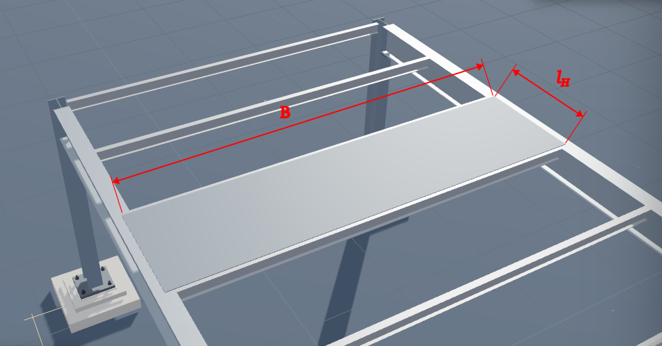
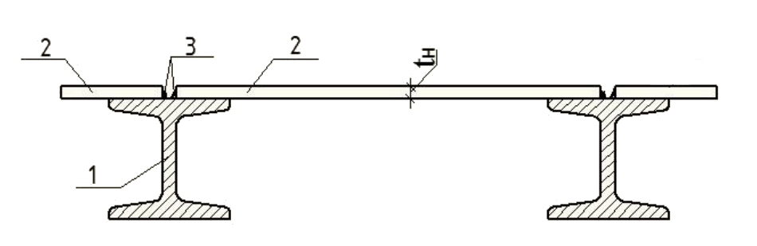
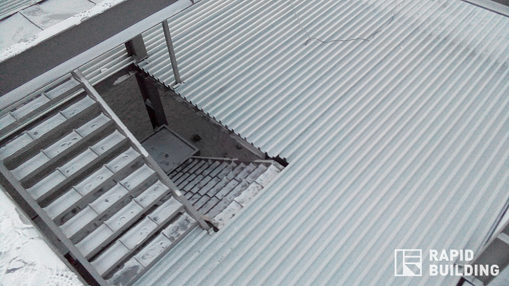
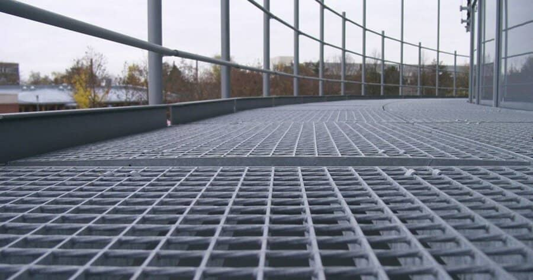

1.1. Компоновка балочной клетки нормального типа
Подбор толщины настила, назначение пролёта настила и расстановка балок настила в ячейке
Что тут надо делать.
Дом начинается с фундамента, а расчёт нагрузки на этот фундамент начинается с крыши. Вот и мы сначала подберём толщину настила и его пролёт. Потому что нам надо знать, сколько весит этот настил. Как обычно, нам надо проверить конструкцию (в нашем случае — настил) по двум группам предельных состояний, проще говоря, на прочность и деформации. Нужно проверить, что пластина не сломается под ногами. Проверить, что сварной шов, которым пластина приварена к балке под ней, не оторвётся. И что прогиб пластины под нагрузкой не слишком велик, что такой пол не будет прогибаться (заметно) под ногами. Спойлер: стальная пластина вряд ли сломается под ногами, если прогибы у неё не большие. Так что разумно сначала подобрать пластину исходя из максимальных прогибов, а потом просто убедиться, что она не разрушится.

Ну короче, выбираете какой-то размер пролёта пластины настила, берёте какую-то толщину, рассчитываете по формуле, какой получается прогиб, ну и смотрите, не слишком ли он большой получился. Можете для этого воспользоваться следующим инструментом. В нём вы выбираете ширину пластины, её толщину и задаете нагрузку, и смотрите, какой получается прогиб — норм или не норм. За пару минут можно так подобрать. Ну или действуете по следующей инструкции по шагам.

Для понимания я хотел бы пояснить, что в реальности представляет собой настил. Мы рассчитываем его как стальную пластину, лист стали. Но, конечно, не очень-то рационально. На деле стальные настилы либо гофрированные (Рис. 4), либо решетчатые (Рис. 5).


Порядок компоновки
-
Полная нормативная нагрузка на перекрытие
Сначала определяемся с тем, какая нагрузка давит на наш настил. У вас в задании есть постоянная $g_n$ и временная $p_n$. Ну вот и просуммируйте её. Это будет типа "вся нагрузка". В реальном расчёте может быть много разных нагрузок, ещё есть коэффициенты сочетания, на которые домножаются наши нагрузки при суммировании. Но в нашем случае эти коэффициенты будут равны единице. Ещё есть собственный вес плиты, толщину которой мы пока даже не знаем. Но для простоты его тоже не будет.
$$q_n = g_n + p_n$$Получили полную нормативную нагрузку.
-
Толщина настила
По значению $q_n$ назначается толщина настила по таблице рекомендуемых значений:
Полная нормативная нагрузка $q_n$, кН/м² Толщина настила $t_{\text{н}}$, мм до 10 6…8 11–20 8…10 21–30 10…12 более 31 12…14 Эта таблица не истина в последней инстанции, просто содержит прикидочные значения, можно её использовать для того что бы определиться с чего начать.
-
Предельно допустимый относительный прогиб настила
Принимается по СП 20.13330.2016 в зависимости от пролёта настила:
Пролёт настила $l_{\text{н}}$ $f/l$ менее 1,0 м 1/120 от 1,0 до 3,0 м 1/150 более 3,0 м 1/200 Далее используется обратная величина $n_0 = l/[f]$.
Прикидываете на глазок какой пролёт у настила будет и выбираете допустимы упрогиб. Ну скорее всего у вас будет от 1м до 3м. Потому берёте соотношение $f/l = 1/150$. Это значит что максимальны прогиб в 150 раз должен быть меньше чем пролёт.
-
Отношение пролёта настила к толщине (пристрелочная формула)
Теперь можно выбрать ширину пластины, а можно воспользоваться следующей формулой:
$$\frac{l_{\text{н}}}{t_{\text{н}}} = \frac{4}{15}\, n_0 \left( 1 + \frac{72\,E_1}{q_n\, n_0^4} \right)$$где $E_1 = \dfrac{E}{1-\nu^2}$ — приведённый модуль упругости; $E$ — модуль упругости стали; $\nu$ — коэффициент Пуассона (для сталей $\nu = 0{,}3$); $q_n$ — полная нормативная нагрузка; $n_0 = l/[f]$.
Это некая аналитическая приближенная формула, выведенная непонятно кем, но она часто встречается в учебниках и методичках. И она даёт неплохие результаты для разумных параметров. Ну, то есть, не для не слишком большого пролёта, не слишком тонкой пластины, не слишком толстой, не слишком малыми нагрузками и пр. Короче, в принципе можно использовать. Но после подбора пролёта по этой формуле нужно произвести проверку на величину прогиба. На этой странице есть автоматический калькулятор для этой формулы, а также мои предположения о том, как формула была получена.
Находим пролёт:
$$l_{\text{н}} = \frac{4}{15}\, n_0 \left( 1 + \frac{72\,E_1}{q_n\, n_0^4} \right)t_{\text{н}}$$ -
Пролёт настила
Мы получили какой-то пролёт, число у вас может быть какое угодно, но стальные пластины не изготавливают какими угодно. Так что из ГОСТ 82-70 или ГОСТ 103-76 выбираем подходящую пластину.
-
"Вырезаем" полоску из пластины
Теперь начнем проверять, действительно ли мы нормальную пластину подобрали. Но расчет пластины — дело не такое простое, потому, конечно, всё постарались упростить, а там плюс-минус похожие результаты получаются. Пластинка у нас довольно длинная в одном направлении, и за счет этой длины можно утверждать, что она прогибается везде примерно одинаково, а значит, в расчетах можно взять любой её отдельный кусочек. Масленно "вырезают" один сантиметр пластинки из середины, и получается этакая балка шириной в 1 сантиметр и высотой, например, 6, смотря сколько вы взяли толщину пластины. И дальше проводят расчеты уже как с балкой. Все единицы длины переводим в сантиметры, и тогда ширина b становится равна просто 1. И так как мы рассчитываем балку, то нагрузка нужна уже не на метр квадратный, а просто на метр, то есть погонная:
$$q_{n}^{\text{пог}} = q_n \cdot b$$где $q_n$ — полная нормативная нагрузка на перекрытие; $b = 1$ см — ширина полоски.
-
Балочные прогибы в середине пролёта
Проверим условие жесткости (что пластина не прогибается больше чем положено)
Определим прогиб пластины через формулу для шарнирно-опёртой балки:
$$\qquad f_{q,n} = \frac{5}{384} \cdot \frac{q_{n}^{\text{пог}} \cdot l_{\text{н}}^4}{E_1 \cdot I_x} \tag{1}$$где $E_1 = \frac{E}{1-\nu^2}$ — приведённый модуль упругости, $I_x$ - осевой момент инетрции относительно горизонтальной оси.
Сечение пластины, в продольном направлении, представляет собой прямоугольник. Так что момент инерции находится просто:
$$ I_x = \frac{bh^3}{12} $$Помним что b = 1.0 см. Тогда:
$$ I_x = \frac{t_Н^3}{12} \tag{2}$$Но приведенная формула для прогиба верна только для шарнирно-опёртой балки, у которой один шарнир подвижен. А у нас оба неподвижны. Значит, возникает так называемый распор — горизонтальная сила, которая растягивает пластину и она прогибается меньше. Поэтому мы и записали прогиб как $f_{q,n}$, это не настоящий прогиб $f_n$, а увеличенный. Запишем его следующим образом:
$$ f_{q,n} = f_n + \alpha f_n \tag{3} $$тогда
$$ f_{n} = \frac{f_{q,n}}{(1 + \alpha)} \tag{3'} $$Распор определяется по следующей формуле (как она получается показано на этой странице):
$$ H= \frac{\pi^2}{4} E_1t_Н \left(\frac{f_n}{l_Н}\right)^2 . \tag{4}$$Есть ещё такое понятие как критический распор, фактически он равен критической силе, получаемой по формуле Эйлера для сжимаемого стержня, потому видимо так и называется:
$$H_{\text{кр}} = \frac{\pi^2E_1 I_x}{l_{\text{н}}^2} \tag{5}$$Не вдаваясь в подробности, если решать уравнение от производных чертвертого порядка, можно получить и равенство (3) и следующее:
$$\alpha = \frac{H}{H_{\text{кр}}} \tag{6} $$Подставляем (4) и (5) в (6):
$$\alpha = 3 \left(\frac{f_n}{l_Н}\right)^2 $$Если теперь в него засунуть (3'), то получим слдующее кравнение:
$$\alpha (1 + \alpha) = 3 \left(\frac{f_{q,n}}{t_Н}\right)^2 $$Ну то есть кубическое уравнение:
$$\alpha^3 + 2 \alpha^2 + \alpha = 3 \left(\frac{f_{q,n}}{t_Н}\right)^2 \tag{7} $$Короче что вам нужно сделать. Надо посчитать (1) найдя $f_{q,n}$, замем посчитать правую часть (7), найти $\alpha$ из (7) и из (3') уже найти $f_{n}$.
Чтобы не решать кубическое уравнение самостоятельно вот вам калькулятор:
КАЛЬКУЛЯТОР КОЭФФИЦИЕНТА αЗадайте правую часть уравнения (7): $3\,(f_{q,n}/t_{\text{н}})^2$ — калькулятор найдёт неотрицательный корень $\alpha$.
Корень уравнения α—Уравнение $\alpha^3 + 2\alpha^2 + \alpha = 3\,(f_{q,n}/t_{\text{н}})^2$ имеет единственный неотрицательный корень, так как $\alpha(1+\alpha)^2$ монотонно возрастает при $\alpha \ge 0$.
-
Условие жесткости
Проверим условие жесткости (что пластина не прогибается больше чем положено)
$$f_{n} \le [f] \le \frac{l_{\text{н}}}{n_0}$$Если выполняется, значит всё нормально, прогибы в пределах нормы. А если нет, то возвращайтесь к шагу 2.
-
Максимальные напряжения в "балке" (вырезана из пластины сантиметровая пололоса)
$$\sigma_{\max} = \sigma_M + \sigma_H = \frac{M_{\max}}{W_z} + \frac{H}{A} $$
здесь $\sigma_M$ - нормальные напряжения в сечении "балки" вызваные изгибающим моментом, $\sigma_H$ - нормальные напряжения в сечении "балки" расстягивающими усилиями распора.
Расчеты теперь проводяться от расчетных нагрузок:
$$q^{\text{пог}} = (\gamma_{f,1} \cdot g_n + \gamma_{f,2} \cdot p_n) \cdot b$$где $\gamma_{f,1}, \gamma_{f,2}$ — коэффициенты надёжности по нагрузке, принимаемые по СП 20.13330.2016.
Подставляйте эту нагрузку в формулу (1) из шага номер 7, что бы найти прогиб от расчетной нагрузки, затем из формулы (3) найдите $\alpha$, так определите распор:
$$H = \alpha H_{\text{кр}} $$Максимальный изгибающий момент с учётом разгружающего действия распора получается по следующей формуле:
$$M_{\max} = \frac{q^{\text{пог}} \cdot l_{\text{н}}^2}{8} - H \cdot \frac{f_q}{1+\alpha}$$ -
Условие прочности
Проверим условие прочности (что металл пластины не потечет)
$$\sigma_{\max} \le R_y \cdot \gamma_c$$Если выполняется, значит всё нормально, бочёк не потик, заканчиваем проверку. А если нет, то возвращайтесь к шагу 2.
Результат раздела
- принятая толщина настила $t_{\text{н}}$;
- пролёт настила и шаг балок настила $l_{\text{н}} = a$;
- количество балок настила в ячейке $k$ и привязка крайних балок $b$.
Эти данные используются далее: в п. 1.2 — для проверки настила, в п. 1.4 — для сбора нагрузок на балки настила, в п. 1.5 — как исходные данные для компоновки усложнённого типа.